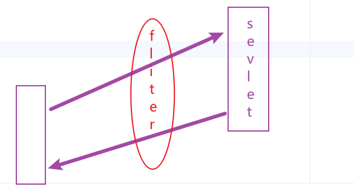

D20230915
- DEMO:controller->sevice->dao
- DEMO:impl：nope
- DEMO:impl：simple
- bean.xml以及运用
D20230914
- sql配置文件中<choose><Where>的使用
单元测试
- AddUser
- updateUser,DeleteUser
- DeleteManyUser
D20230913
代码修改
D20230912
配置文件以及@Test的运用
- 1. <sql id="select-name">...(配置文件)
- 2. Assertions.assertTrue(Test)
- 3. Assertions.assertNull
- 4. Assertions.assertNotNull
- 5. sql标签用来封装SQL语句, include标签来调用
- 6. resultMap的使用
- 7. ResultMapperTest@tableinfo
配置文件多种拿到参数的办法
- 1. mybatis接口中注解的使用
- 2. mybatis接口中(用po中的封装类得到相应参数)
- 3. mybatis接口中(用map的key值来作为参数名，value为值)
md转html
- 1. 页面展示（内容区域展示最原始的markdown内容）
- 2. 手动将 markdown 内容转成 html
- 3. 自动将 markdown 内容转成 html
D20230911
文档编写
D20230908
写代码日
- sevice的提出，（处理结构分为三层）
- 三层架构（控制/表现：Controller+View；业务逻辑+数据访问：Model）
- - 表现层/User Interface layer：接收请求、封装数据、调用业务逻辑层、响应数据。（web/controller）
- - 业务逻辑层/Business Logic Layer：封装具体的业务逻辑，如：注册。访问数据访问层的一个或多个基础功能，如：根据邮箱查询用户
+ 增加用户。事务一般放在这一层来控制。(service)
- - 数据访问层/Data access layer：最基础的 CRUD 操作。(dao/mapper/repository)
D20230907
写代码日
- 批量删除功能，查找用户存在时弹出信息
- 邮箱验证和验证码验证
D20230906
- 连接数据库的接口
- 控制日志输出的内容
- 发现的一些问题（原生JS的before方法只对querySelectorALL元素遍历后的最后一个元素生效）
- 解决办法是改用Jquery
D20230905
- 登陆界面mybatis的运用
- 各个操作都用mybatis实现
- HelloSlf4j
- Slf4j with NOP provider
- To switch logging frameworks,just replace slf4j binding on your class
- LogVsSOUT
- logback-classic
- parameterized messages
- GetLogger(Lambok)
- console appender
- file appender
- patten property
D20230904
- 连接池的运用
- mybatis运用到和数据库的连接中
D20230901
Listener-监听服务器的一些事件
- @WebListener
- (JAVA文件)Mylistener,对服务器启动和destroyed时可以进行一些操作
- (JAVA文件)HttpSessionListener,对Session启动和destroyed时可以进行一些操作
- (JAVA文件)AttributeListenerServlet,对Session的Attribute更改，增加，删除过程中可以进行一些操作 AttributeListenerServlet
D20230831
Fliter要可插拔，一个sevlet可以加入多个过滤器 ，原理图

当有多个fliter时，有自己规定的顺序，若想自定义顺序，可以在WEB-INF文件夹中用<filter-mapping>控制顺序
D20230829
D20230828
D20230824
写代码日
- 用户和管理员界面进一步优化
- 管理员界面删除功能加入
D20230823
写代码日
- 1.根据邮箱自动生成账号
- 2.登陆跳转界面出现问题的解决
- 3.管理员界面信息显示的优化
D20230822
D20230821
D20230817
D20230816
匹配规则
- 请求行.method
- ServletRequest1
- 请求头.method
- ServletRequest2
- 请求体.method
- ServletRequest3
- 请求转发,数据传递
- ServletRequest4